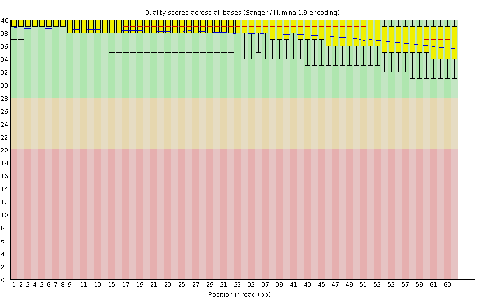
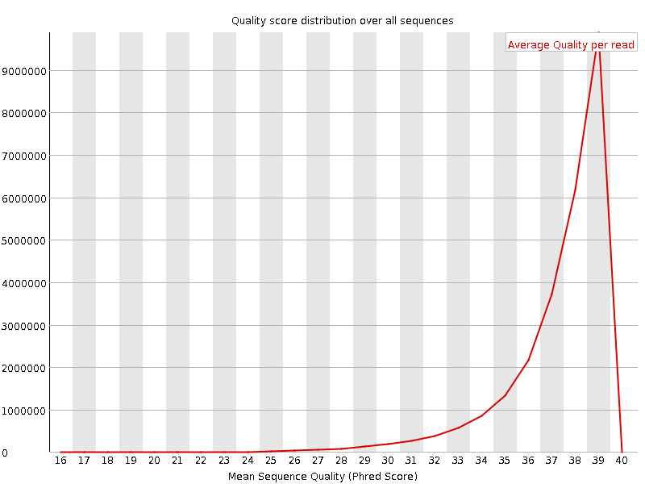
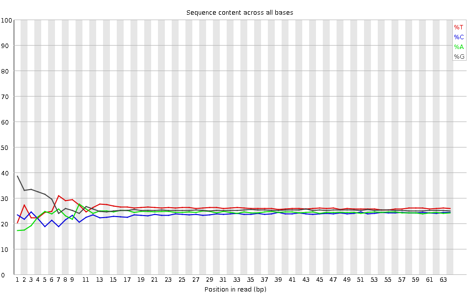
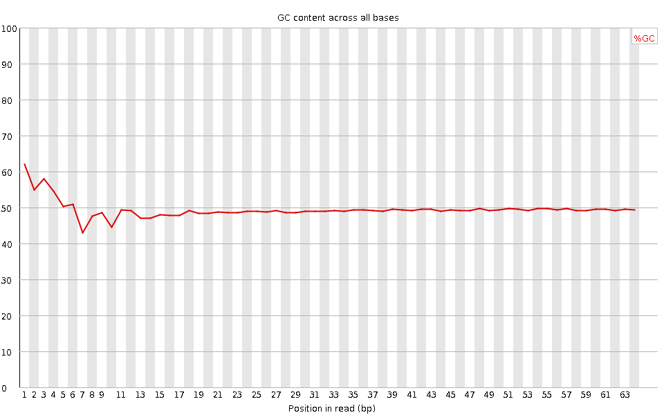
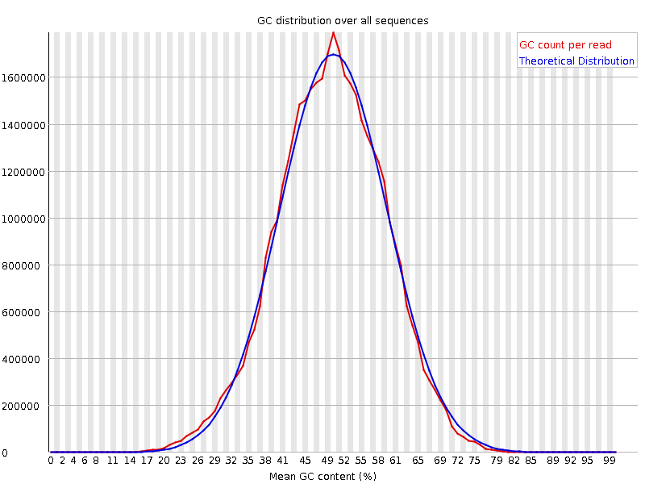
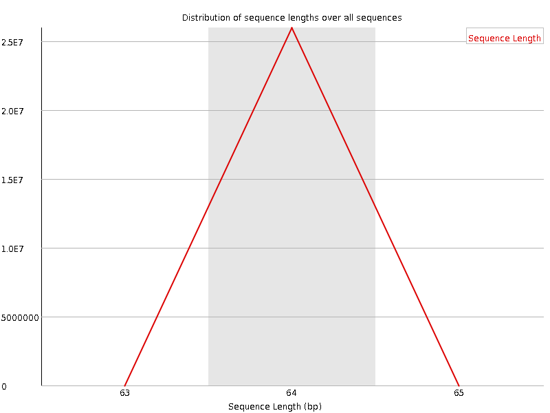
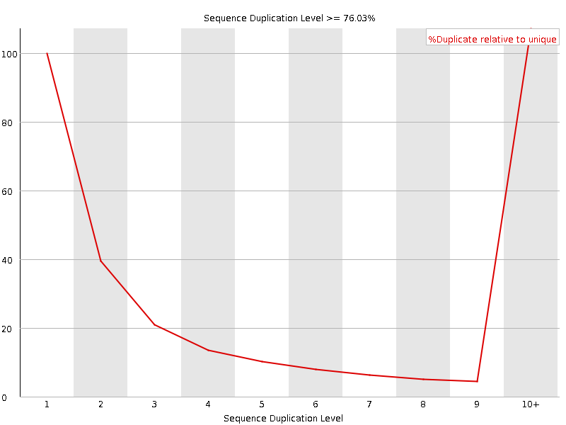
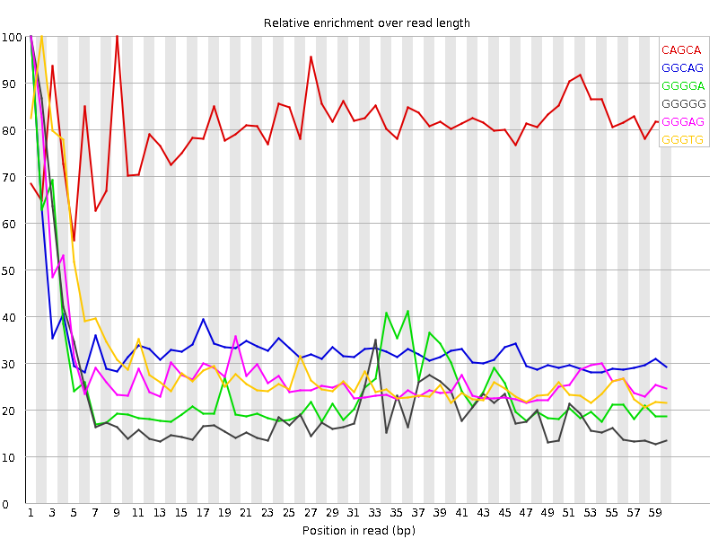

![[OK]](Icons/tick.png) Basic Statistics
Basic Statistics
| Measure | Value |
|---|---|
| Filename | SRR307928_pe_1.f.fastq |
| File type | Conventional base calls |
| Encoding | Sanger / Illumina 1.9 |
| Total Sequences | 25968863 |
| Filtered Sequences | 0 |
| Sequence length | 64 |
| %GC | 49 |
Per base sequence quality

Per sequence quality scores

![[WARN]](Icons/warning.png) Per base sequence content
Per base sequence content

![[FAIL]](Icons/error.png) Per base GC content
Per base GC content

Per sequence GC content

Per base N content

Sequence Length Distribution

Sequence Duplication Levels

Overrepresented sequences
| Sequence | Count | Percentage | Possible Source |
|---|---|---|---|
| GTATAATACTAAGTTGAGATGATATCATTTACGGGGGAAGGCGCTTTGTGAAGTAGGCCTTATT | 30502 | 0.11745604726706747 | No Hit |
| GGGTGATCTAAAACACTCTTTACGCCGGCTTCTATTGACTTGGGTTAATCGTGTGACCGCGGTG | 27071 | 0.10424407106310353 | No Hit |
Kmer Content

| Sequence | Count | Obs/Exp Overall | Obs/Exp Max | Max Obs/Exp Position |
|---|---|---|---|---|
| CAGCA | 4400830 | 3.329148 | 4.13788 | 9 |
| GGCAG | 3542435 | 2.2467334 | 6.6919947 | 1 |
| GGGGA | 2879265 | 1.6455411 | 6.5354943 | 1 |
| GGGGG | 3005495 | 1.5981474 | 7.335963 | 1 |
| GGGAG | 2772750 | 1.5846664 | 5.549804 | 1 |
| GGGTG | 2903920 | 1.5401921 | 5.109505 | 2 |
| GTGGG | 2703670 | 1.4339828 | 7.3382316 | 1 |
| GGGGT | 2491040 | 1.3212072 | 5.2137256 | 1 |
| CGGGG | 2093540 | 1.2353916 | 6.0586433 | 1 |